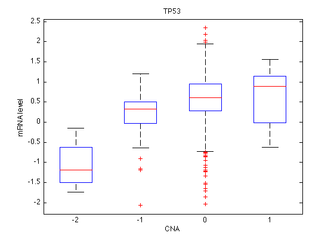
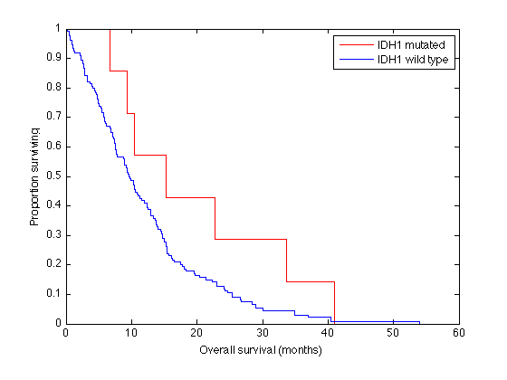

Contents
- CGDS toolbox examples ('showdemo cgdstutorial')
- Show toolbox help
- Get list of available cancer types
- Get available genetic profiles for a given cancer type
- Get available case lists (collections of samples) for a given cancer type
- Get multiple types of genetic profile data for a specific gene
- Plot mRNA levels as a function of copy number status
- Get genetic profile data for multiple specified genes
- Get clinical data for all patients in a given case list
- Survival plots for patients with and without IDH1 mutations
- Run a function in non-verbose mode
CGDS toolbox examples ('showdemo cgdstutorial')
The CGDS toolbox provides a set of functions for retrieving data from the cBio Cancer Genomics Data Portal web API. Get started by adding the CGDS toolbox directory to the path and setting the server URL.
% Modify path to make toolbox functions globally available in matlab. % This will depend on install location, and is only necessary if you want % to make the functions available from any directory addpath('/Users/Erik/Documents/MATLAB/cgds'); % Set web API URL (excluding 'webservice.do', trailing slash optional) cgdsURL = 'http://www.cbioportal.org/public-portal/';
Show toolbox help
Use 'helpwin cgds' if you prefer to display it in the Help window.
help cgds;
Contents of cgds:
cgdstutorial - CGDS toolbox examples ('showdemo cgdstutorial')
getcancerstudies - Get cancer studies from the cBio CGDS portal.
getcaselists - Get case lists from the cBio CGDS portal.
getclinicaldata - Get clinical data from the cBio CGDS portal.
getgeneticprofiles - Get genetic profiles from the cBio CGDS portal.
getprofiledata - Get genomic profile data from the cBio CGDS portal.
Get list of available cancer types
cancerStudies = getcancerstudies(cgdsURL)
cancerStudies =
cancerTypeId: {43x1 cell}
name: {43x1 cell}
description: {43x1 cell}
Get available genetic profiles for a given cancer type
This example retreives available profiles for glioblastoma (GBM).
geneticProfiles = getgeneticprofiles(cgdsURL, 'gbm_tcga')
geneticProfiles =
geneticProfileId: {15x1 cell}
geneticProfileName: {15x1 cell}
geneticProfileDescription: {15x1 cell}
cancerTypeId: {15x1 cell}
geneticAlterationType: {15x1 cell}
Get available case lists (collections of samples) for a given cancer type
caseLists = getcaselists(cgdsURL, 'gbm_tcga')
caseLists =
caseListId: {13x1 cell}
caseListName: {13x1 cell}
caseListDescription: {13x1 cell}
cancerTypeId: {13x1 cell}
caseIds: {13x1 cell}
Get multiple types of genetic profile data for a specific gene
This fetches both mRNA expression and copy number status for P53 in GBM. The last argument causes data to be returned as a numeric matrix. Set to false when fetching non-numeric data, e.g. mutations. 'gbm_mrna' and 'gbm_gistic' are genetic profile IDs in geneticProfiles.geneticProfileID. 'gbm_all' is a case list ID from caseLists.caseListId.
profileData = getprofiledata(cgdsURL, 'gbm_tcga_all', ... {'gbm_tcga_mrna' 'gbm_tcga_gistic'}, ... 'TP53', true)
profileData =
geneticProfileId: {2x1 cell}
alterationType: {2x1 cell}
geneId: {2x1 cell}
common: {2x1 cell}
caseId: {585x1 cell}
data: [2x585 double]
Plot mRNA levels as a function of copy number status
boxplot(profileData.data(1,:),profileData.data(2,:)); title('TP53'); xlabel('CNA'); ylabel('mRNA level');
Get genetic profile data for multiple specified genes
This fetches mutation data for five different genes. Only one genetic profile ID is allowed in this case. Note that genes may be returned in a different order than requested.
profileData = getprofiledata(cgdsURL, 'gbm_tcga_sequenced', ... 'gbm_tcga_mutations', ... {'TP53' 'NF1' 'EGFR' 'PTEN' 'IDH1'}, false)
# DATA_TYPE Mutations
# COLOR_GRADIENT_SETTINGS MUTATION_EXTENDED
profileData =
geneId: {5x1 cell}
common: {5x1 cell}
caseId: {284x1 cell}
data: {5x284 cell}
Get clinical data for all patients in a given case list
clinicalData = getclinicaldata(cgdsURL, 'gbm_tcga_sequenced')
clinicalData =
caseId: {269x1 cell}
clinVariable: {10x1 cell}
data: {269x10 cell}
Survival plots for patients with and without IDH1 mutations
Simplified plot that disregards censoring.
isMutated = ismember(clinicalData.caseId, ... profileData.caseId(~strcmp(profileData.data(2,:), 'NaN'))); overallSurvivalStatus = clinicalData.data(:, ... strcmp(clinicalData.clinVariable, 'OS_STATUS')); overallSurvivalMonths = str2double(clinicalData.data(:, ... strcmp(clinicalData.clinVariable, 'OS_MONTHS'))); ecdf(overallSurvivalMonths(isMutated), 'function','survivor'); set(get(gca,'Children'), 'Color', [1 0 0]); hold on; ecdf(overallSurvivalMonths(~isMutated), 'function','survivor'); xlabel('Overall survival (months)'); ylabel('Proportion surviving'); legend({'IDH1 mutated' 'IDH1 wild type'});
Run a function in non-verbose mode
cancerStudies = getcancerstudies(cgdsURL, 'silent');